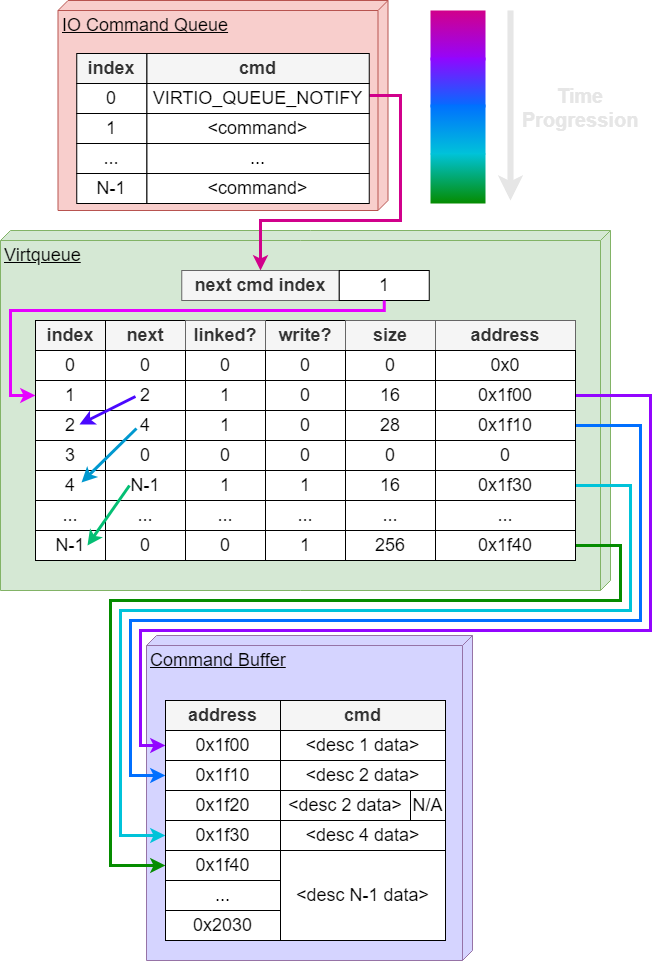

Starting in late January 2022, I joined Dr. Alexandra (Sasha) Fedorova's research group to complete an undergraduate thesis. This page contains a brief summary of the work, and the paper is embedded at the bottom.
The group identified a bottle neck in many modern workloads which require massive parallelization and data handling: Many of these workloads operate largely on specialized hardware accelerators (such as GPUs), and use a centralized CPU only to coordinate between subsystems and facilitate data transfers. Noting that many periferals today have their own processors (SSDs, smart NICs, memory), the group envisioned a decentralized, CPU-less system, in which independent devices communicate together to execute workloads.
As a first step to this vision, the team wanted to explore the possibility of direct communication over unified memory between a GPU and a file system implemented in the SSD. As a proof of concept, a hardware emulator was used to simulate the external file system, and I worked on starting the implementation of direct file access on the GPU side.
As I only had a few months for the thesis, I prioritized coming up with an architecture that accomplish the task on the GPU, and writing a simple proof of concept code for how this architecture that would interact with the hardware emulator.
Before giving a brief explanation of the architecture, here is some basic, relevant information about the architecture of a GPU:

NVIDIA GPUs are made up of a large number of simple 32-core processors called SMs, with each core running its own thread. Under the CUDA programming model, threads are divided into blocks, with each block only running on a single SM for the entire lifetime of the program. If there are more than 32 threads in a block, they are further divided into 32-thread groups called warps. Threads in the same warp always execute concurently on the SM. All cores within a single SM run the same instruction. As a result, if threads within a warp do not execute the same instruction due to conditional branching, their execution is serialized. This is called thread divergence.
In terms of memory architecture, NVIDIA GPUs have an L1 cache, and L2 cache, and RAM (there are also texture and constant memory but these were not used for this project). The L1 cache is located within the SMs, while the L2 and RAM are shared by all SMs. The L1 cache cache space is split, with half of it used as a proper cache, while the other half is available to the programmer and is called shared memory. Anything stored in shared memory is shared by and only available to threads within a specific block. Since shared memory is located inside the SM itself, it is smaller but significantly faster than RAM. Alternatively, the programmer can also store data in RAM, or global memory, which is shared across all SMs.
The interface layer of VirtioFS, which is exposed to the user, provides the usual POSIX-like semantics for file system operations. The functions implemented for the proof-of-concept VirtioFS are shown in the table below:
| API Function | Description |
|---|---|
| g_readdir | open current directory and read its contents |
| g_open | open file and add its file descriptor to the current block's file table |
| g_close | close file and remove its file descriptor from the current block's file table |
| g_fstat | query the size of the file |
| g_read | read file and increment seek pointer by amount read |
| g_write | write to file and increment seek pointer by amount written |
| g_lseek | Change the position of the file's seek pointer |
| g_dup2 | Duplicate the file descriptor, allowing to track separate seek pointers in the file |
The major difference between the CPU file API and the VirtioFS interface is that VirtioFS does not allow all threads to open files independently of each other. Due to the architecture of the GPU, allowing each thread to open a different file would result in thread divergence, causing a huge bottle neck by serializing each file operation in the warp. Instead, VirtioFS allows independent calls only at warp-level, and requires that all threads within a warp call the same VirtioFS function with the exact same parameters. Note that for the simplicity, the proof-of-concept implementation only allowed block-level independence.
The data transfer and communication between the GPU and SSD (or emulator) is done via unified memory, accessible from both devices. In work done before I joined, it was decided to follow Virtio, a standard for I/O communication used mostly in virtual machines. The communication protocol operates over unified memory, with a section dedicated to an I/O command queue (where Virtio commands are placed and the handshake happens. This will likely be replaced in the future with bus commands), and a unified memory buffer used for bulk data transfers.
The unified memory buffer is further split into virtio queues (virtqueues) and command buffers. Virtqueues are a queue structure where device specific commands are placed. In this case, the virtqueues hold the file system specific commands. Any data that is transfered between the devices will be contained in the command buffers, and will be pointed to by the virtqueue entry. An example of the SSD would tranverse the unified memory on a read command is shown in the diagram below.
An important design decision I took here was to dedicate an individual virtqueue and buffer to each block in the program. If blocks were to access a shared virtqueue, accesses to the virtqueue would have to be synchronized. Allowing each block to have its own virtqueue and buffer space fully exploits the parallelism of the GPU and allows file system action to occur asynchronously from the perspective of the GPU.
At initialization, each block is allocated the maximum transfer size negotiated by the SSD device. If the total allocated memory would exceed available memory, total memory is divided evenly amongst blocks. The obvious tradeoff here is that as the number of blocks increases, the largest amount of data in a single transfer is decreased. Note that while this approach is sufficient for the research teams applications of interest, CUDA in theory allows for a ridicuolously large number of blocks for each program. In the future, further research is required into how exactly to optimize between the partition size of unified memory and the number of blocks sharing a partition. That's an interesting question but I definitely did not have enough time to tackle this in the 5 months I worked on my thesis.